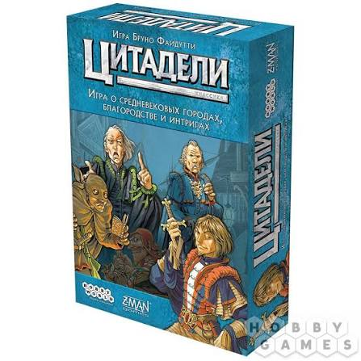
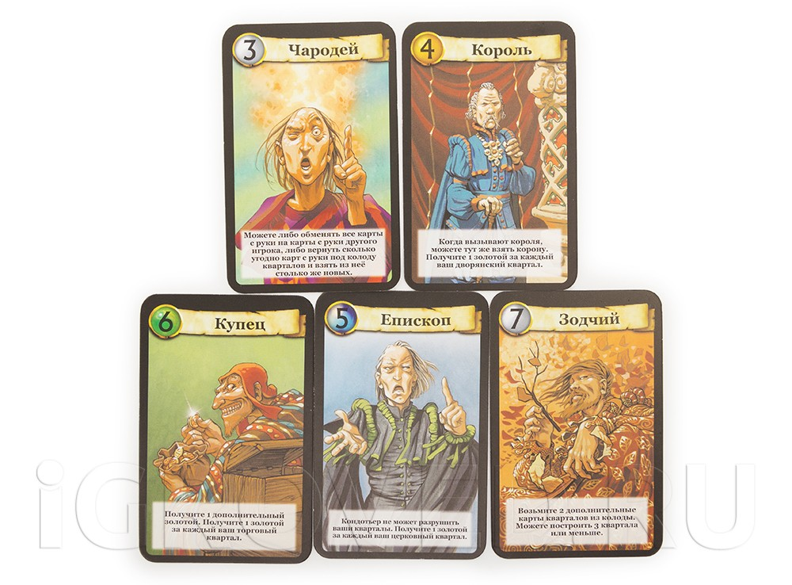
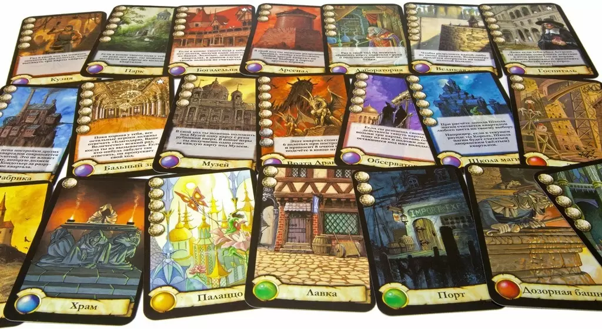
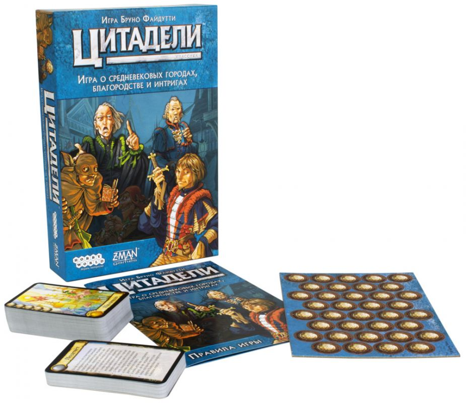

Цитадели

Жанр
Стратегии
Игроки
2-8
Сложность
Средняя
Время игры
45+ минут
Возраст игроков
10+
Сложность правил
Низкая
Издатель
Hobby World
Карточная игра "Цитадели" - градостроительная стратегия. Каждый игрок должен построить город, могучий, прекрасный и богатый. Город каждого игрока "строится" из карт кварталов. Чтобы добавить квартал к своему городу, игрок должен заплатить за него золотыми монетами. Карты кварталов и небольшое количество золота каждый игрок получает в ходе игры, а добавочные средства и карты он может получить за счёт сил выбираемых им персонажей. В городе игрока может быть только один квартал определенного типа, и в свой ход игрок не может построить больше одного квартала.
«Цитадели» увидели свет в 2000 году. Их по праву называют шедевром настольно-игровой индустрии. Успех «Цитаделей» привёл к тому, что несколько лет спустя вышло расширение этой игры, а за последние полтора десятилетия она была издана на 25 языках в коробках самых разных форм и размеров. Здесь представлено классическое издание «Цитаделей», каким оно было в 2000 году. Изначальные 8 персонажей, карта короны, картонные жетоны золота и лишь несколько небольших обновлений в тексте карт и правил.
Карты персонажей играют большую роль в развитии "Цитаделей". Во-первых, порядковый номер, стоящий на карте каждого персонажа, определяет порядок действий игроков в раунде. Во-вторых, у каждого персонажа есть своя сила: Ассасин поможет избавиться в текущем раунде от одного персонажа, Купец принесет выбравшему его игроку добавочные монеты, Кондотьер разрушит квартал в городе соперника, и так далее.
Игра завершается в конце раунда, в котором город любого игрока достигнет предельного размера (7 или 8 кварталов, в зависимости от выбранного варианта игры). Финальный подсчёт, в котором игрок суммирует ценность всех кварталов его города, выявляет победителя.
Умная, захватывающая, незатянутая игра "Цитадели" берёт ещё и тем, что ни один игрок не выпадает из процесса до самого конца игры: даже потеряв все шансы на победу, игрок может влиять силами своих персонажей на ситуацию в городах соперников.
• 18 Карт персонажей;
• 14 карт-памяток;
• 80 карт кварталов;
• 30 жетонов золота;
• 1 карта короны;
• правила.


